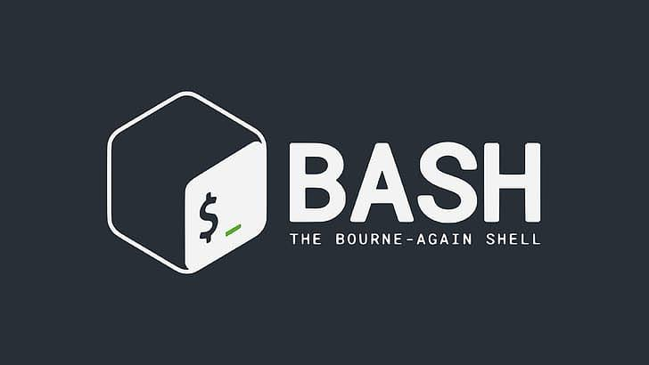
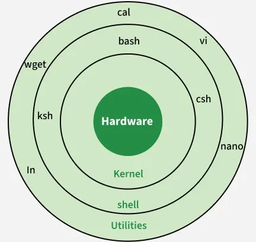
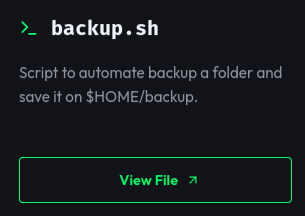
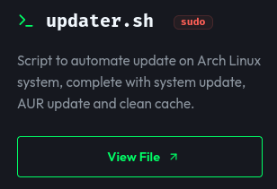
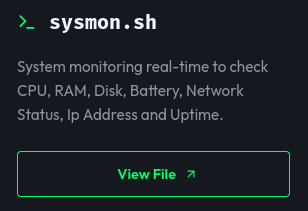
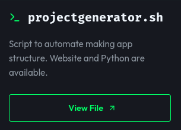
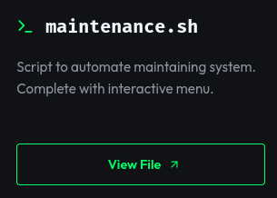
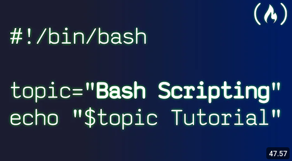

Apa itu Bash?
Bourne-Again Shell atau sering disebut Bash adalah Shell yang berfungsi sebagai penerjemah perintah terminal untuk sistem operasi .
"The single most important design decision: what you type at the prompt and what you write in a file share the same syntax."
— Brian Fox, pencipta Bash
Pada artikel ini, kita akan bahas tentang Bash, terutama pada bagian Scripting dengan Bash.
Bourne-Again Shell

Jadi apa itu Bash? Bourne Again Shell atau biasa disebut dengan Bash adalah penerjemah perintah pengguna untuk dijalankan oleh kernel. Kernel sendiri adalah inti dari sistem operasi yang mengatur memory, interrupt (input dan semacamnya) dan lain-lain.
Bash biasanya sering dijadikan sebagai default shell dalam sistem operasi linux, tetapi banyak juga yang menggunakan shell lain seperti fish dan zsh. Jika tidak menggunakan TTY, Bash sering digunakan dengan terminal seperti kitty, foot (aku tak tahu kenapa disebut foot) dan lain-lain. Oh ya, jika kau menggunakan laptop linux, kau bisa masuk ke TTY mode dengan Ctrl+Alt+F3, dan jika ingin kembali seperti semula tinggal tekan Ctrl+Alt+F1.
Baca Juga: Terminal: Kawan Sejati Programmer
Scripting Bash
Kita masuk ke dalam Scripting Bash. Apa itu Scripting dengan Bash? yang dimaksud dengan scripting adalah membuat skrip yang bisa digunakan berkali-kali untuk pekerjaan yang diulang-ulang. Alasan utama membuat Script Bash tentunya agar lebih mudah dan tidak mengulangi pekerjaan yang sering diulang-ulang.
File script bash biasanya berakhiran dengan ekstensi .sh atau bahkan tidak menggunakan akhiran ekstensi sama sekali.

Membuat Backup Script

Di sini aku belajar dari AI, tapi disini aku tidak minta AI untuk membuat projectnya secara langsung melainkan dengan memberitahu dasarnya dan guide untuk script yang kubuat. Script pertama adalah backup.sh.
Satu hal yang cukup penting dari membuat bash script adalah shebang. contoh shebang adalah seperti berikut:
#!/bin/bashKenapa shebang ini cukup penting? karena shebang digunakan untuk memberitahu sistem bagaimana file tersebut dieksekusi. Jadi sistem tidak akan bingung dengan bagaimana sebuah file dieksekusi atau aplikasi apa yang digunakan untuk mengeksekusi file tersebut.
backup.sh ini adalah script untuk membuat backup folder tertentu. Di sini menggunakan perintah read untuk mengambil input dari user, yang dimana input user tersebut adalah nama foldernya. Setelah selesai maka script otomatis mengkompresnya menjadi file tar.gz.
Yang kupelajari adalah if condition. if condition di bash ini cukup unik, coba lihat kode berikut:
if [ ! -d "$DESTINATION" ]; then
mkdir -p "$DESTINATION"
echo "folder $DESTINATION has been created"
else
echo "folder $DESTINATION already created!"
fiBash menggunakan akhiran dan semacam array?, aku tak tahu kenapa seperti itu untuk bash. Akhiran di sini adalah if diakhiri dengan fi. Ini sangat mempermudah karena programmer tahu kapan sebuah if diakhiri, Meskipun akhirannya menggunakan if yang dibalik yang akan terasa agak aneh. Sejauh yang kutahu if condition yang diakhiri juga ada di bahasa pemrograman Lua. Kalau pada Lua seperti berikut:
if ... then Do_Something end
Membuat Script untuk update sistem.

Ini adalah script yang paling mudah, karena hanya membuat script untuk update system. Yang paling unik dari sini adalah aku diminta untuk membuat fungsi yang mendeteksi koneksi internet. Coba lihat kode berikut:
check_internet(){
if ping -c 1 ping.archlinux.org >/dev/null 2>&1; then
echo "-------------"
echo "| Connected |"
echo "-------------"
else
echo "----------------"
echo "| Disconnected |"
echo "----------------"
exit 1
fi
}Jujur saja aku awalnya bingung dengan >/dev/null 2>&1. Ternyata kode tersebut digunakan untuk membersihkan output agar tampilan terminal tetap bersih. Kalau kau tidak tahu, fungsi ping akan menghasilkan output yang banyak sesuai dengan kecepatan internet yang dipakai.
Membuat script untuk monitoring system

Script ini mulai menggunakan loop, harus kuakui bahwa loop dalam pemrograman itu agak membingungkan, tapi untungnya di script ini cukup gampang. Dari sini juga aku belajar tentang cara kerja dari pipe, pipe itu memiliki simbol seperti "|". Pipe sering digunakan untuk mengirim output dari satu perintah ke perintah berikutnya sebagai input. Contohnya seperti berikut:
printf "RAM Used : " && free -h | grep Mem | awk '{print $3}'Bisa dilihat maksud dari perintah di atas adalah hasil dari free -h menghasilkan output:
total used free shared buff/cache available
Mem: 7.6Gi 5.1Gi 513Mi 920Mi 2.8Gi 2.5Gi
Swap: 8.0Gi 0B 8.0GiLalu perintah dari grep Mem akan mengambil baris Mem.
Mem: 7.6Gi 5.1Gi 513Mi 920Mi 2.8Gi 2.5GiSetelah mengambil bagian Mem saja, selanjutnya perintah dari awk '{print $3}' mengambil kolom ketiga dari output.
Mem: 7.6Gi 5.1Gi 513Mi 920Mi 2.8Gi 2.5Gi
^ ^ ^ ^ ^ ^ ^
1 2 3 4 5 6 7Jadi, gabungan dari 3 perintah tersebut menghasil 5.1Gi karena berada di dalam kolom 3. Kedengarannya kompleks, tetapi jika dicoba sendiri akan paham.
Membuat project generator dengan Bash

Topik utama pada bagian ini adalah fungsi EOF. Coba lihat kode berikut:
cat << EOF > index.html
<!DOCTYPE HTML>
<html>
<head>
<link rel="stylesheet" href="css/style.css">
<title>Website</title>
</head>
<body>
<h1>Title</h1>
<script src="js/script.js"></script>
<body>
<html>
EOF
EOF merupakan singkatan dari End of File. fungsi dari EOF adalah ia dapat menulis kode yang panjang ke dalam satu file. satu hal yang agak sulit dari project ini adalah kita harus berfikir sebagai user. Begini, kita harus menggunakan perintah cd untuk pindah dari satu directory ke directory lain, setelah itu baru kita membuat filenya, jika kita tidak menggunakan perintah cd, maka file tidak akan dibuat sesuai dengan keinginan kita. Sebagai programmer, kita pasti tahu bahwa file management itu sangat penting.
Baca Juga: Root: Mode paling berbahaya di Linux
Membuat script untuk maintain sistem melalui menu

Ini adalah project terakhir yang AI tugaskan padaku sekaligus yang paling kompleks. Berbeda dengan project pertama yang menggunakan if condition, di project ini kita menggunakan case. Sebenarnya penggunaan if dan case agak mirip, hanya berbeda syntaxnya saja.
case "$SELECT" in
"1")
full_maintain
show_menu
;;
"2")
update_packages
show_menu
;;
"3")
clean_cache
show_menu
;;
"4")
clean_journal
show_menu
;;
"5")
remove_downloads
show_menu
;;
"6")
check_disk
show_menu
;;
"7")
clear
show_menu
;;
"8")
echo
echo "[✓] OK! See Ya!"
exit 1
;;
*)
show_menu
;;
esacYang membuat project ini sulit hanyalah penggunaan banyak perintah dalam satu file, aku harus mengetes semua perintah di terminal sebelum dimasukkan ke dalam script.
Bashing
Kelima script bash di atas adalah tugas yang diberikan oleh AI untuk kukerjakan. Karena scriptnya agak sedikit, jadi aku membuat repository github untuk menyimpan semua script bash. scriptnya tersimpan di https://github.com/RangS-1/Bashing. Tidak hanya itu, aku juga mengupload script bash yang kubuat ini ke arch user repository. Bisa kau install dengan perintah:
yay -S bashingSebagai catatan, kebanyakan script yang kubuat berfungsi untuk linux distro berbasis Arch. Contohnya seperti maintenance.sh dan updater.sh karena menggunakan perintah seperti pacman untuk update sistem. Dan juga project ini aku buat tanpa AI sepenuhnya, di sini aku belajar dengan logika sendiri dan hanya menggunakan AI untuk menjelaskan command dan saran dari tiap kode yang kubuat.
Baca Juga: Arch User Repository: Pengalaman ekosistem AUR di Arch Linux
Kesimpulan
Belajar Scripting dengan Bash bisa dibilang menyenangkan karena kita harus berfikir secara logika dalam membuatnya. Lagipula skill ini akan sering digunakan untuk otomatisasi pekerjaan terutama bagi yang tertarik sebagai (Linux) System Administrator.
Aku juga membuat website untuk redirect ke repository github, berikut linknya https://rangs-blog.vercel.app/Bashing. Bagi kamu yang tertarik dalam scripting bash, bisa cek video berikut:
Link ke Video.
